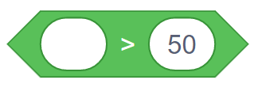
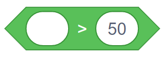
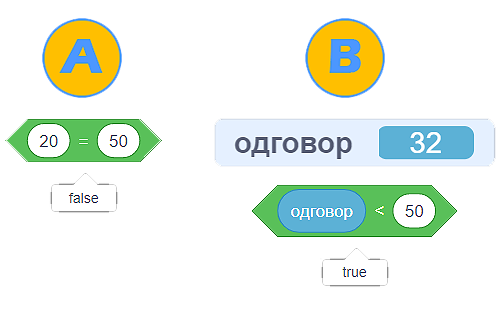
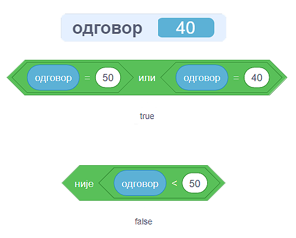
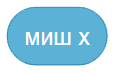
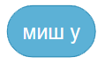

Условно извршавање (гранање)¶
У оквиру овог часа:
- упознаћеш наредбе условног извршавања
- упознаћеш логичке операторе и, или, није
- вежбаћеш употребу оператора поређења
- вежбаћеш употребу блокова групе Осећаји
Најважнији појам у овој лекцији су наредбе условног извршавања, односно управљачки блокови који омогућавају условно извршавање. Ти блокови изглeдају овако:

Да бисмо употребили овакве блокове потребан нам је услов, а он се формира као код блока „понављај до …”.
Када користимо блок са једним устима, наредбе у устима ће се извршити једном ако је услов испуњен, а иначе неће ни једном. Код блока  који има двоја уста, у случају да је услов испуњен извршавају се наредбе у горњим устима, а ако није испуњен извршавају се наредбе у доњим устима.
који има двоја уста, у случају да је услов испуњен извршавају се наредбе у горњим устима, а ако није испуњен извршавају се наредбе у доњим устима.
Примери¶
Пример 1 - Поздрав¶
Помоћу ове скрипте мачак ће те питати колико је сати да би знао како да те поздрави у наставку програма. Ако унесеш број мањи од 21, мачак ће рећи „Довиђења.”, а у супротном ће рећи „Лаку ноћ.”

Наилазак на овај велики блок током извршавања програма је као наилазак на скретницу, јер извршавање може да се настави једним или другим путем.

У програмирању се ова два могућа пута извршавања зову гране, па се зато и управљачки блок за условно извршавање зове гранање или наредба гранања. Група наредби у горњим устима блока се назива да грана јер се извршава када је одговор на питање из услова да, док, слично томе, наредбе у доњим устима чине не грану.
Оператори поређења¶
У претходном примеру смо користили и оператор за поређење добијеног одговора и броја 21. У групи блокова Оператори постоје ова три оператора за поређење:

 

{kind=link}
Као што вероватно претпостављаш, услов формиран овим операторима је испуњен ако између леве и десне стране важи однос описан знаком у средини, као у математици.
Резултат оваквих оператора је увек тачно или нетачно. Двокликом на оператор у окружењу Скреч добијамо исписан његов резултат, као у примерима A и B на следећој слици.
{kind=link}
У примеру А видимо да је резултат испитивања испуњености услова вредност false, што значи нетачно. И заиста, нетачно је да су бројеви 20 и 50 једнаки. У примеру B испитивали смо да ли је број који је унео корисник мањи од броја 50 и добили вредност true, што значи тачно. Заиста, корисник је унео број 32, а тај број је мањи од броја 50.
Логички оператори¶
Можда примећујеш да би у претходном примеру мачак у 1 сат по поноћи одговорио Довиђења а не Лаку ноћ. Мачак за сада одговара са Лаку ноћ само у 21, 22 и 23 сата, а било би боље да тако одговара на пример и у 0, 1, 2, 3 и 4 сата.
Да бисмо научили мачка да примереније одговори, треба нам начин да му кажемо да са Довиђења одговара само од 5 до 20 сати, а са Лаку ноћ у осталим случајевима. Услов
одговор је између 5 и 20
се овако може изразити комбиновањем оператора поређења које смо упознали:
(одговор је већи од 4) и (одговор је мањи од 21)
За комбиновање једноставнијих услова у сложеније, користе се ови оператори из групе блокова Оператори:
- Резултат оператора
 је true ако су тачна оба једноставнија услова;
је true ако су тачна оба једноставнија услова; - Резултат оператора
 је true ако су тачан бар један од једноставнијих услова;
је true ако су тачан бар један од једноставнијих услова; - Резултат оператора
 је true ако није испуњен једноставнији услов (вредност једноставнијег услова је false, тј. нетачно).
је true ако није испуњен једноставнији услов (вредност једноставнијег услова је false, тј. нетачно).
У окружењеу Скреч резултате логичких оператора такође можемо да добијемо двокликом на оператор. Да бисмо потврдили да разумемо како функционишу логички оператори, погледајмо следећу слику:
{kind=link}
Логички оператор ИЛИ даје вредност true зато што је испуњен бар један од два услова (број који је корисник унео није једнак 50, али јесте једнак 40).
Логички оператор НИЈЕ даје вредност false зато што је под-услов испуњен (40 јесте мање од 50), па је цела изјава „није тачно да је 40 мање од 50” нетачна.
Сада смо спремни да дорадимо претходни пример.
Пример 2 - поздрав после поноћи¶
Помоћу ове скрипте мачак уме да каже Довиђења у току дана (од 5 до 20 сати), а Лаку ноћ у току ноћи (од 21 до 4 сата).

Исти резултат можемо да добијемо и мало другачије:

Осећаји¶
Блокови из групе Осећаји садрже разне вредности, које можемо да употребимо за формирање услова тако што те вредности поредимо са другим вредностима. На пример, ови блокови
 {kind=link}
{kind=link}
садрже вредности координата тренутног положаја миша. Захваљујући овим блоковима, ликови у нашим програмима могу различито да реагују на различите положаје миша.
Пример 3 - где је миш¶
У овом примеру мачак прати положај миша и непрекидно изговара да ли се миш налази горе-лево, горе-десно, доле-лево, или доле-десно.
Да бисмо могли да испитамо у којој четвртини позорнице се налази миш, користимо три наредбе гранања, од којих једна садржи друге две:
{kind=link}
Задатак може да се реши и коришћењем 4 наредбе гранања (са једним устима), помоћу којих испитујемо једну по једну четвртину позорнице:
{kind=link}
Додатак¶
Ако желиш, погледај поглавље Наредбе гранања у Петљином практикуму. Тамо можеш да нађеш још нека објашњења и занимљиве пројекте.
Петљин студио Гранање на сајту Скреча садржи урађене пројекте за задатке сличне оним којима смо се овде бавили.